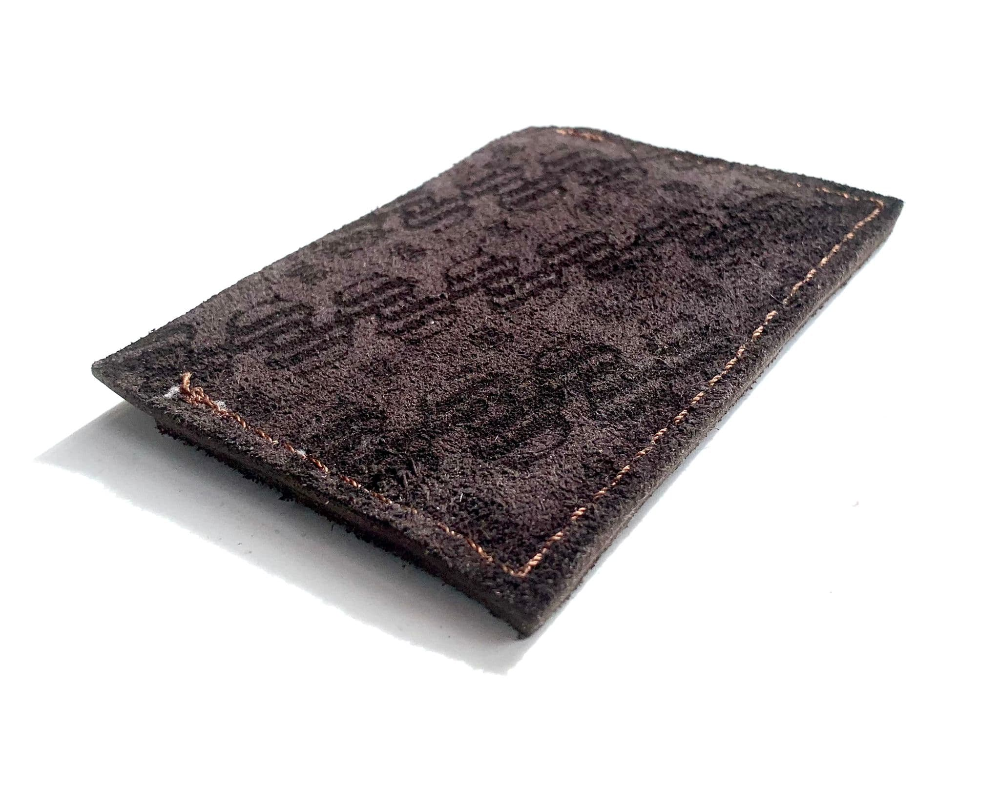
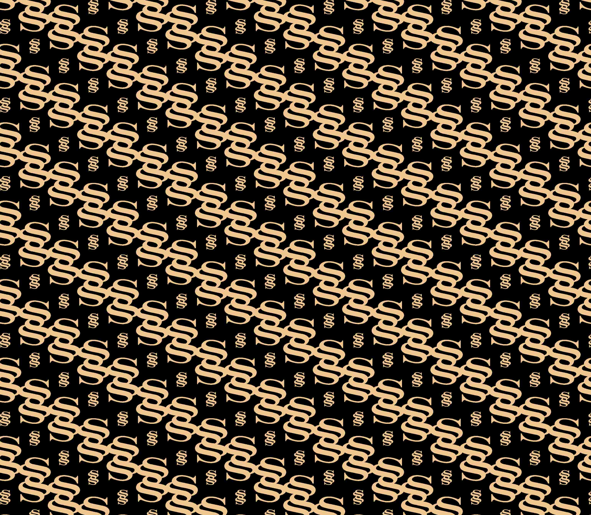
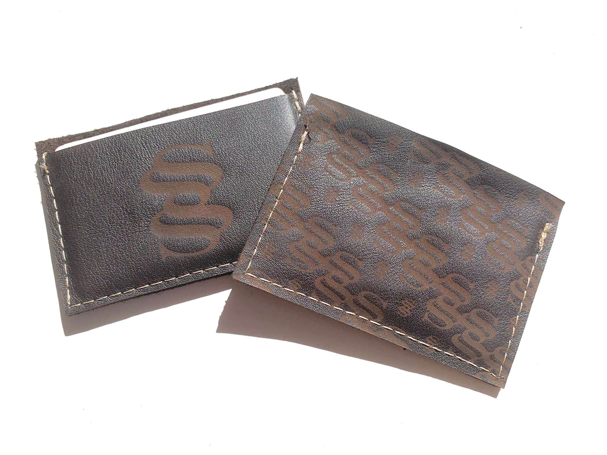

Cartera Shaw
Patrón grabado a láser sobre cuero cosido a mano
2024–2025
Diseño de producto
Taller Bidimensional
Illustrator, cortadora láser
El encargo consistía en crear un patrón a partir de un elemento propio y aplicarlo a un producto físico real. El isotipo SHAW, ya desarrollado como identidad personal, se convirtió en el módulo del patrón. Se desarrollaron cinco variantes del patrón en Illustrator, explorando distintas disposiciones y densidades. Tras seleccionar la más adecuada para cada pieza, se procedió al grabado láser en diferentes tipos de cuero, serraje de flor negro y marrón, para evaluar cómo respondía el material. El cosido se realizó a mano con técnica de zapatero, y los cantos se acabaron con el mismo método tradicional. Una cartera funcional que uso actualmente. El proyecto demuestra cómo una identidad gráfica puede trasladarse a un objeto físico manteniendo coherencia y carácter.


